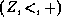
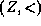
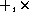
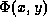

O.V.Belegradek
Department of Mathematics
Kemerovo State University
Kemerovo, Russia 650043
beleg@kaskad.uucp.stanet.ru
Alexei P. Stolboushkin
Fourth Dimension Software
555 Twin Dolphin Dr.
Redwood City, CA 94404
and
UCLA Mathematics Department
Los Angeles, CA 90095
aps@4ds.com
aps@math.ucla.edu
M.A.Taitslin
Department of Computer Science
Tver State University
Tver, Russia 170000
mat@tversu.ac.ru
Michael.Taitslin@tversu.ru
In the relational model of databases a database state is thought of as a finite collection of relations between elements. For many applications it is convenient to pre-fix an infinite domain where the finite relations are going to be defined. Often, we also fix a set of domain functions and/or relations. These functions/relations are infinite by their nature. Some special problems arise if we use such an approach. In the paper we discuss some of the problems. e show that there exists a recursive domain with decidable theory in which (1) there is no recursive syntax for finite queries, and in which (2) the state-safety problem is undecidable.
We provide very general conditions on the FO theory of an ordered domain that ensure collapse of order-generic extended FO queries to pure order queries over this domain: the Pseudo-finite Homogeneity Property and a stronger Isolation Property. We further distinguish one broad class of ordered domains satisfying the Isolation Property, the so-called quasi- domains. This class includes all domains, but also the ordered group of integer numbers and the ordered semigroup of natural numbers, and some other domains.
We generalize all the notions to the case of finitely representable database states -- as opposed to finite states -- and develop a general lifting technique that, essentially, allows us to extend any result of the kind we are interested in, from finite to finitely-representable states. We show, however, that these results cannot be transferred to arbitrary infinite states.
We prove that safe -programs do not have any effective syntax.
Open questions
1.
Further work needs to be done for integer numbers. For instance, the authors are under impression that an effective translation algorithm for locally generic queries over  can be extracted from a Fraïssé-Ehrenfeucht-style proof of decidability of Presburger Arithmetic. 2.
In general, we conjecture that if, for an expansion of  or another expanded domain, the first order theory of the expanded domain is decidable and locally generic extended queries do not express more than restricted ones, then there is an effective translation algorithm.
3.
Then, how much higher than + in can we go? Obviously,  make locally generic extended queries impossible to express as pure order ones because, for example, the query "the cardinality of P is even" is locally generic and expressible in the FO extended language but not in the restricted language. We conjecture that if, in an expansion of , locally generic extended queries express more than restricted ones, the first order theory of the expanded domain is undecidable.
4.
Moreover, we conjecture that if, in an expansion of , locally generic extended queries express more than restricted ones, then there is such a first order formula  in the language of the expansion that for any finite subset A of integer numbers there is such a natural number b that
5.
On the side of finitization, a natural question is, can the results for finitely presented states be extended to more powerful constraint databases, say, to linear constraint databases? If yes, for which domains? A specific open problem is, can it be done for linear constraints with at least one constant over rational or real numbers.
Michael A. Taitslin